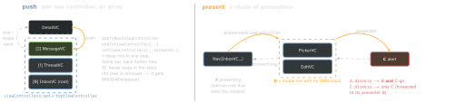
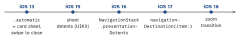

ios-swift · folio
In one line: Push adds a VC to a UINavigationController’s
viewControllers array (drill-down, back button, pop). Present starts a
separate presentation chain linked by presentedViewController /
presentingViewController (a modal task you finish with dismiss). The
modalPresentationStyle decides whether the presenter’s view leaves the screen —
and so whether it gets viewWillDisappear/viewWillAppear.
Download PDF Print view LaTeX source


How it works
- Push needs a container:
navigationControllerisnilin a bare modal — present aUINavigationControllerwrapping it. - Who presents? UIKit walks up to the context-defining VC: from a child, the modal’s
presentingViewControlleris the nav/tab controller, not the child. - Dismiss rule (Apple): the presenting VC is responsible. Calling
dismisson the presented VC forwards to its presenter; calling it lower in the chain dismisses its presented child and everything above. - One presented VC per presenter, presenter in the window — else a warning and nothing shows.
visibleViewControllerincludes a modal. - Sheets (iOS 15+):
sheetPresentationController·.detents = [.medium(), .large()](.customiOS 16) ·prefersGrabberVisible;
largestUndimmedDetentIdentifierkeeps the presenter usable. - Swipe-down:
isModalInPresentation = trueblocks it →presentationControllerDidAttemptToDismiss.presentationControllerDidDismissfires only for user (swipe) dismissal, never for yourdismiss().
modalPresentationStyle
| Style | Looks like | pres. disappears | swipe close |
|---|---|---|---|
.automatic | iOS 13+ default; → .pageSheet | no | yes |
.pageSheet | card; presenter shrinks behind | no | yes |
.formSheet | centred box (iPad) | no | yes |
.fullScreen | presenter view removed | yes | no |
.overFullScreen | covers all, presenter stays | no | no |
.overCurrentCtx | over a context-defining VC | no | no |
.popover | iPad bubble; sheet on iPhone | no | tap out |
Example — push, present, delegate back
protocol EditDelegate: AnyObject { func didSave(_ i: Item) }
class EditVC: UIViewController { weak var delegate: EditDelegate? }
class ListVC: UIViewController, EditDelegate {
func open(_ i: Item) { // push: same stack
navigationController?
.pushViewController(DetailVC(i), animated: true) }
func edit(_ i: Item) { // present: new chain
let e = EditVC(i); e.delegate = self
let nav = UINavigationController(rootViewController: e)
nav.sheetPresentationController?.detents = [.medium()]
nav.isModalInPresentation = true // no swipe-close
present(nav, animated: true) }
func didSave(_ i: Item) { // presenter closes it
dismiss(animated: true); reload() } } // no viewWillAppear!SwiftUI
NavigationStack(path: $path)(iOS 16, replacesNavigationView):NavigationLink(value:)pushes a value;.navigationDestination(for: T.self)maps it — once per type, on a persistent ancestor (not inside a lazyListrow).NavigationPath= type-erasedHashablelist (mixed types);[Route]if one type. Pushappend, pop-to-rootremoveLast(path.count), deep link = assign the whole path.Codableroutes →path.codable→@SceneStorage.- Modals:
.sheet(item:)(prefer overisPresented+ separate state — stale item race),.fullScreenCover,.presentationDetents.@Environment(\.dismiss)closes the nearest context: inside a pushed view it pops, it does not close the sheet. OneNavigationStackper tab; never nest stacks.
Deep links
URL scheme → scene(_:openURLContexts:); universal link → scene(_:continue:); on a cold launch both arrive in willConnectTo’s connectionOptions instead. Parse to a route enum, then setViewControllers / assign path (SwiftUI: .onOpenURL).
Traps
- iOS 13
.pageSheetdefault: the list under a sheet gets noviewWillAppearon dismiss — refresh via delegate/closure. pushfrom a VC presented without a nav →niloptional chain, silent no-op.- Delegate:
weak var+protocol: AnyObject(weak needs a class type, and isOptionalbecause it auto-nils). Closures:[weak self]. - Coordinator must drop its child coordinator on the back-swipe pop too — detect it in
UINavigationControllerDelegate.didShow.
Timeline
